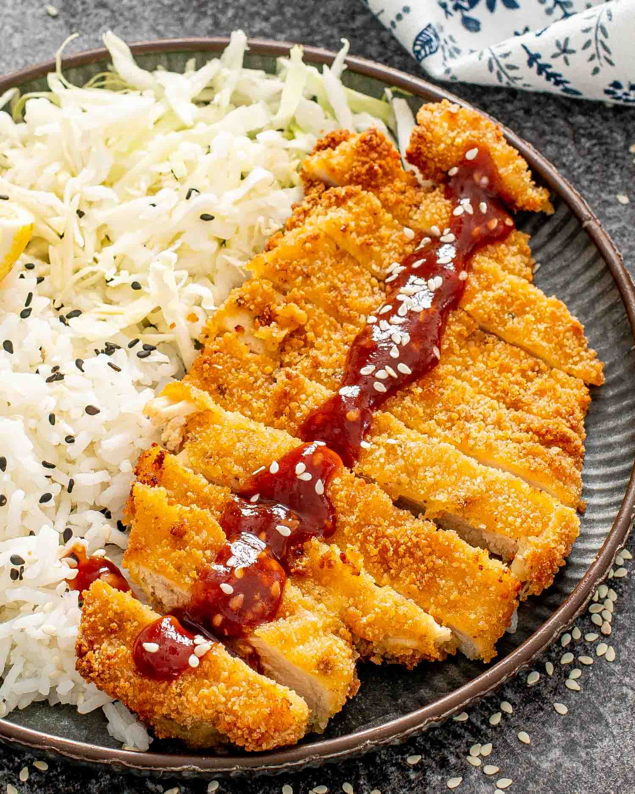

Chicken Katsu

Description
Chicken katsu is juicy, crispy, and comforting. It only takes 25 minutes and 7 ingredients
to make this easy chicken dinner that just might be better than what your local Japanese restaurant sells.
Ingredients
- 1 lb thinly sliced chicken breast
- 1 cup Panko breadcrumbs
- 1/3 cup mayo
- 1/2 cup vegetable oil
- Salt & pepper
Steps
- Season chicken, rest up to overnight
- Turn stove to high, heat oil in skillet
- Put chicken in bag with mayo
- Toss chicken in plate of breadcrumbs
- Cook chicken in skillet, around 4 minutes each side
- Place chicken on cooling rack, add salt to taste
- Slice, and serve with tonkatsu sauce, rice, and cabbage